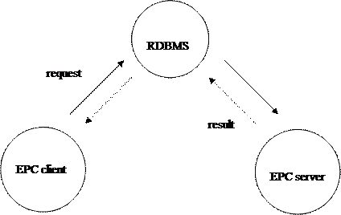
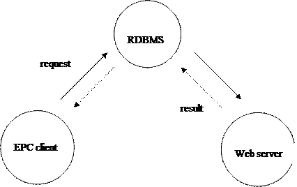

1. Table of contents................................................................................................................. 2
2. The External Procedure Call Toolkit (EPC)........................................................................... 4
2.1. About the EPC................................................................................................................. 4
2.1.1. Advantages of the EPC.............................................................................................. 4
2.1.2. Functionality of the EPC............................................................................................ 4
2.1.3. Example................................................................................................................... 4
2.2. Directory structure........................................................................................................... 5
2.3. Portability........................................................................................................................ 5
2.3.1. Programming languages supported............................................................................. 5
2.3.2. Platforms supported................................................................................................... 5
2.4. Architecture..................................................................................................................... 5
2.4.1. Using DBMS_PIPE................................................................................................... 5
2.4.2. Using utl_http/utl_tcp................................................................................................ 7
3. Components of the EPC Toolkit........................................................................................... 9
3.1. Interface Definition Language........................................................................................... 9
3.1.1. Syntax...................................................................................................................... 9
3.1.2. Mapping between Oracle and IDL data types............................................................ 10
3.1.3. Declarations of external functions............................................................................. 10
3.1.4. Example of an IDL file............................................................................................ 10
3.2. Software components..................................................................................................... 11
3.2.1. Database software................................................................................................... 11
3.2.2. IDL compiler.......................................................................................................... 11
3.2.3. EPC C library.......................................................................................................... 11
4. Using the EPC................................................................................................................... 12
4.1. Software environment.................................................................................................... 12
4.2. Execute operating system commands............................................................................... 12
4.2.1. Creating the interface definition............................................................................... 12
4.2.2. Creating the main module........................................................................................ 12
4.2.3. Building the software............................................................................................... 13
4.2.4. Running the server.................................................................................................. 14
4.2.5. Stopping the server.................................................................................................. 14
4.3. Quote of the day............................................................................................................. 14
4.3.1. Creating
the interface definition............................................................................... 14
4.3.2. Building the software............................................................................................... 15
4.3.3. Get the message of the day....................................................................................... 16
4.4. Amazon web service...................................................................................................... 17
4.4.1. Creating the interface definition............................................................................... 17
4.4.2. Building the software............................................................................................... 18
4.4.3. Get the Amazon com information............................................................................. 18
5. Installing the EPC Toolkit.................................................................................................. 20
5.1. Build platforms supported............................................................................................... 20
5.2. Requirements................................................................................................................. 20
5.3. Create the database software owner................................................................................. 20
5.4. Building the software..................................................................................................... 21
6. Frequently asked questions................................................................................................ 22
This chapter gives a high level overview of the EPC toolkit.
The EPC Toolkit is a development toolkit, which enables the transparent invocation of web services or procedures developed in a non-Oracle programming language from the PL/SQL language, the procedural extension of SQL. The external procedure call will behave like a standard PL/SQL call, except that the procedure is implemented as a web service or in a foreign language. The procedures to be invoked are described using an interface definition language.
· Integration with existing web services or foreign language libraries: no code duplication is needed.
· Implementation of functionality other than in PL/SQL. Sometimes a foreign language is more suitable than PL/SQL, for instance when speed is important or complex data types are used.
· Ability to use data sources other than Oracle.
· Speeding up a conversion to Oracle by reusing software components written as a web service or in a foreign language.
· Transparency to the client, i.e. the implementation may be changed.
· Call external procedures with or without return values.
· Call external procedures using a combination of read-only, read-write and write-only parameters.
· The following Oracle data types are supported: BINARY_INTEGER, FLOAT, DOUBLE PRECISION and VARCHAR2.
An organisation wants to e-mail changes to its security tables to the security manager. The Oracle database instance resides on a Unix machine, which has a sendmail procedure written in the language C. The email can now be sent to the security manager by creating a trigger on the security tables and call the PL/SQL sendmail procedure, which actually calls the C sendmail procedure.
The directory structure of the EPC distribution is as follows:
|
Directory |
Description |
|
config |
Configuration files needed to build EPC. |
|
doc |
Documentation directory. |
|
doc/c |
Generated HTML documentation of C sources |
|
doc/sql |
Generated HTML documentation of package specifications |
|
examples |
Top directory of examples. |
|
examples/demo |
The demo directory. |
|
examples/soap |
Invoke web services. |
|
replace |
Replacement C functions for various platforms. |
|
src |
Top level directory for EPC sources. |
|
src/lib |
EPC library sources. |
|
src/prog |
Idl
compile sources. |
|
src/sql |
Epc package sources. |
|
test |
Test directory. |
|
utils |
Utilities. |
Currently the only foreign language supported for implementing a server is C. However you may use only the client part of the EPC to invoke Web services (XML-SOAP) or XMLRPC messages.
The source code generated is ASCII C and PL/SQL. The EPC has been tested on Windows 95, Windows 98, Windows NT, Windows 2000, Windows 2003, Windows XP and all Unix variants. The Oracle PL/SQL code is portable by definition.
Before Oracle8 there was no possibility to invoke external routines directly from PL/SQL. The DBMS_PIPE package however gives the ability to pass parameters and return values. To simplify this process, a compiler generates the necessary stubs, which handle the marshalling of parameters and return values. Since Oracle8 there is also a possibility to invoke external routines directly using a shared library.
The architecture of the EPC consists of one or more EPC clients and one or more EPC servers. An EPC client is just a normal Oracle client, for instance a forms application or an SQL*Plus session. An EPC server is a special Oracle client designed to handle requests coming from EPC clients when the external procedure is implemented in a foreign language.

An External Procedure Call follows this scheme for foreign language procedures:
· An EPC client session requests a procedure to be executed. This is notified to the DBMS.
· An EPC server session receives the request from the DBMS.
· The EPC server calls the foreign language procedure.
· The EPC server returns the results to the EPC client via the DBMS. The results include error codes, procedure return value and output parameters. When the procedure is a void procedure with neither in/output nor output parameters, it is possible to specify that the return information is not checked. This is the one-way type invocation.
This type of communication is implemented using the Oracle dbms_pipe package. Both the client and the server can specify which request pipe they use for the call requests. The result pipe can not be configured and is unique for a database session.
The protocol of the request is as follows:
· protocol version
· message sequence number
· request (XML encoded)
· result pipe name (only if one-way is false)
The result consists of the following information (only if one-way is false):
· message sequence number
· response (XML encoded)
The architecture of the EPC consists of one or more EPC clients and one web server. An EPC client is just a normal Oracle client, for instance a forms application or an SQL*Plus session. The web server implements the web service.

An External Procedure Call follows this scheme for web services:
· An EPC client session requests a procedure to be executed. This is notified to the DBMS.
· A web server receives the request from the DBMS.
· The web server executes the web service.
· The web server returns the results to the EPC client via the DBMS. The results include error codes, procedure return value and output parameters.
This type of communication uses the Oracle utl_http or utl_tcp package.
The protocol of the request is as follows:
· request (XML encoded)
The result consists of the following information:
· response (XML encoded)
The Interface Definition Language describes the interface of the foreign procedures. The syntax is similar to the DCE language (see Guide to Writing DCE Applications, 2nd edition, by John Shirley, Wei Hu, and David Magid). This DCE language is used for a specification of Remote Procedure Calls. The interface describes the interface name, the namespace, the remote procedure name, its return value data type (if any) and the parameters with their mode (IN, IN/OUT or OUT) and data type.
The IDL language has the following syntax::
<interface specification> { <function specification 1>; ... <function specification N>; }
An interface specification consists of the keyword interface followed by a space, the interface name and for Web services the namespace between double quotes. This interface name is used for the generation of files.
A function specification has the following syntax:
[ oneway ] <return type> <function name> ( <parameter specification 1>, <parameter specification N> );
A function without parameters should provide an empty parameter specification list, i.e. ().
A <parameter specification> has the following syntax:
<parameter mode> <parameter type> <parameter name>
<return type> is one of:
· char* or string, i.e. a string.
· int or long
· float or double
·
void,
i.e. a function returning nothing
<parameter mode> is one of:
·
[in]
·
[inout]
·
[out]
<parameter type> is one of:
· char*, i.e. a string. The maximum length is 4096 (excluding terminating zero) when using the DBMS_PIPE variant. This is the maximum message buffer size.
·
char[<max
length>]
· int or long
· float or double
· xml
The maximum size of
the encoded XML message is 4000.
|
IDL data type |
Oracle data type |
|
int |
BINARY_INTEGER |
|
long |
BINARY_INTEGER |
|
float |
FLOAT |
|
double |
DOUBLE PRECISION |
|
char* |
VARCHAR2 |
|
char[<max length>] |
VARCHAR2 |
|
xml |
VARCHAR2 |
Table 1 IDL-Oracle mapping
The external functions which are used in the IDL file will be declared in the generated header file unless you include your own piece of code between lines starting with %{ and %} in the IDL file. This piece of code will be embedded in the generated source code. An example:
%{
/* your code */
%}
interface
A vendor wants to use file I/O. Oracle 7.3 provides a utl_file package, but then file I/O is only possible on the database server and for Oracle 7.3 or higher. A solution is to create an interface file_io to call the C stdio functions. This enables the vendor to do file I/O on the machine of the EPC server.
interface file_io
{
long fopen( [in] char * filename, [in] char * mode );
int fclose( [in] long file_descriptor );
}
This example assumes that a pointer may be converted to a long, which is normally true.
The database software consists of the following packages EPC, EPC_CLNT and EPC_SRVR (see sql/index.html).
The EPC_SRVR package is only used by the DBMS_PIPE variant.
The Interface Definition Language compiler accepts an IDL file and generates source code from this specification. The following files will be created:
|
File |
Description |
Used by |
|
<interface>.h |
interface header file for C programs |
DBMS_PIPE variant. |
|
<interface>.c |
A C file |
DBMS_PIPE variant. |
|
<interface>.pls |
PL/SQL file calling the <interface>.pks and <interface>.pkb files |
All variants. |
|
<interface>.pks |
PL/SQL package specification |
All variants. |
|
<interface>.pkb |
PL/SQL package body using an EPC server. |
All variant except the EXTERNAL LIBRARY variant. |
|
<interface>.pke |
PL/SQL package body using PL/SQL external routines (Oracle8 only). |
EXTERNAL LIBRARY variant. |
See the generated HTML documentation of the C sources for more details: c/index.html.
This library is only necessary when using the DBMS_PIPE variant.
See the generated HTML documentation of the C sources for details: c/index.html. See function epc__list_main in lsnr.c for command line options.
This chapter describes three examples:
· Execute operating system commands initiated by an EPC client (the DBMS_PIPE variant).
· Invoke a web service which returns the quote of the day. The web service is described in http://webservices.codingtheweb.com/bin/qotd.wsdl.
· Invoke the Amazon web service which returns information in XML format about the requested information in XML format. The web service is described in http://webservices.amazon.com/AWSECommerceService/AWSECommerceService.wsdl.
The GNU Autoconf/Automake software environment is used for this example. The benefits:
· Simple software build instructions (using a Makefile.am description file).
· Portability among Unix and Windows platforms.
· The make utility is used to build software only when needed.
For more information on GNU Autoconf/Automake, see http://www.gnu.org.
The interface demo consists of a function do_system_call, see ../examples/demo/demo.idl.
The main module consists of the do_system_call routine and the main routine. The main routine just calls the epc__main routine, specifying the command line arguments and the demo interface. See ../examples/demo/main.c.
When the simple approach does not suit your needs, for instance because you want to add another interface you might take a look at the implementation of the epc__main routine. You can copy this and modify it. See ../src/lib/lsnr.c.
The file Makefile.am is a portable Automake description file, which is input for the Automake utility to create a non-portable Makefile. This is an excerpt of the file Makefile.am in ..\examples\demo:
GENERATED_FILES = demo.h demo.c demo.pkb \
demo.pke demo.pks
demo.pls
MOSTLYCLEANFILES = $(GENERATED_FILES) *.pc *.lis
CLEANFILES =
AUTOMAKE_OPTIONS = $(top_builddir)/src/lib/ansi2knr
AM_CPPFLAGS = -I$(top_srcdir)/src/lib @DBUG_CPPFLAGS@
EXTRA_DIST =
noinst_DATA =
noinst_PROGRAMS = demo
BUILT_SOURCES = $(GENERATED_FILES)
demo_SOURCES = demo.idl demo.c main.c
demo_LDADD = $(top_builddir)/src/lib/libepc.la
\
@DBUG_LDADD@
IDL = $(top_builddir)/src/prog/idl$(EXEEXT)
$(GENERATED_FILES): $(IDL) generate
# (re)build the IDL compiler if necessary
$(IDL):
cd
$(top_builddir)/src/prog && $(MAKE) all
generate: demo.idl
$(IDL)
$?
# Before running the compiler first compile
the package
echo
exit SQL.SQLCODE | $(SQLPLUS) $(USERID) @demo.pls
The Oracle USERID has to be specified, either on the command line or as an environment variable. The USERID is scott/tiger for this example. As part of the build process the generated demo.pls file is run by SQL*Plus too.
$ USERID=scott/tiger@<connect_string>
$ export USERID
$ make
Once the demo executable is installed, the demo server can be started.
$ ./demo u scott/tiger
Now you can perform a system command in SQL*Plus:
$ sqlplus scott/tiger
SQL> var retval number
SQL> exec :retval := demo.do_system_call('ls')
The server can be stopped using CTRL-C on Unix or CTRL-BREAK on Windows.
An excerpt of the WSDL of this service is:
<?xml version="1.0" ?>
- <definitions xmlns:tns="http://webservices.codingtheweb.com/bin/qotd.wsdl" xmlns:xsd="http://www.w3.org/2001/XMLSchema" xmlns:soap="http://schemas.xmlsoap.org/wsdl/soap/" xmlns="http://schemas.xmlsoap.org/wsdl/" targetNamespace="http://webservices.codingtheweb.com/bin/qotd.wsdl" name="qotd">
<message name="getQuoteRequest" />
- <message name="getQuoteResponse">
<part name="return" type="xsd:string" />
</message>
+ <portType name="qotdPortType">
- <binding name="qotdBinding" type="tns:qotdPortType">
<soap:binding style="rpc" transport="http://schemas.xmlsoap.org/soap/http" />
- <operation name="getQuote">
<soap:operation soapAction="urn:xmethods-qotd#getQuote" />
- <input>
<soap:body use="encoded" encodingStyle="http://schemas.xmlsoap.org/soap/encoding/" namespace="urn:xmethods-qotd" />
</input>
+ <output>
</operation>
</binding>
- <service name="qotd">
<documentation>Get a Quote of the Day</documentation>
- <port name="qotdPort" binding="tns:qotdBinding">
<soap:address location="http://webservices.codingtheweb.com/bin/qotd" />
</port>
</service>
</definitions>
The following parts of the WSDL (bold) are needed for invoking the service:
This results in the following IDL file:
interface qotd
{
char *getQuote ( );
}
The file Makefile.am is a portable Automake description file, which is input for the Automake utility to create a non-portable Makefile. This is an excerpt of the file Makefile.am in ..\examples\soap:
GENERATED_FILES = qotd.c qotd.h qotd.c qotd.pkb \
qotd.pke qotd.pks qotd.pls
GENERATED_FILES += aws.c aws.h aws.c aws.pkb \
aws.pke aws.pks aws.pls
MOSTLYCLEANFILES = $(GENERATED_FILES)
CLEANFILES = qotd.pls_run aws.pls_run
EXTRA_DIST =
noinst_DATA = qotd.pls_run aws.pls_run
IDL = $(top_builddir)/src/prog/idl$(EXEEXT)
$(GENERATED_FILES): $(IDL)
$(IDL):
cd $(top_builddir)/src/prog && make all
@SUFFIXES@: .idl .pls_run .pls
.idl.pls:
$(IDL) $<
.pls.pls_run:
echo exit SQL.SQLCODE | $(SQLPLUS) $(USERID) @$?
@touch $@
The qotd package is installed when needed:
$ USERID=scott/tiger@<connect_string>
$ export USERID
$ make
$ sqlplus
scott/tiger@<connect_string>
SQL> set serveroutput on size 1000000 format truncated
SQL> declare
SQL>
http_connection epc_clnt.http_connection_subtype;
SQL> l_epc_key
constant epc_clnt.epc_key_subtype :=
SQL> epc_clnt.register('qotd');
SQL> begin
SQL>
http_connection.url :=
SQL>
'http://webservices.codingtheweb.com/bin/qotd';
SQL>
epc_clnt.set_connection_info(l_epc_key, http_connection);
SQL>
epc_clnt.set_namespace(l_epc_key, 'urn:xmethods-qotd');
SQL>
dbms_output.put_line(substr(qotd.getQuote, 1, 255));
SQL> end;
SQL> /
Before this example can be run you will need an Amazon Web Services Subscriber Id. See the following web page at http://www.amazon.com:
Only the ItemSearch message of the Amazon Web Service is used in this example.
The following parts of the WSDL are needed for invoking the service:
This results in the following IDL file:
interface aws {
void ItemSearch([in] string SubscriptionId,
[in] xml Request,
[out] xml Items);
}
See 4.3.2.1.
The aws package is installed when needed:
$ USERID=scott/tiger@<connect_string>
$ export USERID
$ make
$ sqlplus
scott/tiger@<connect_string>
SQL> set serveroutput on size 1000000 format truncated
SQL> declare
SQL> http_connection epc_clnt.http_connection_subtype;
SQL> l_epc_key
constant epc_clnt.epc_key_subtype :=
SQL> epc_clnt.register('aws');
SQL> l_operation_request varchar2(32767);
SQL> l_doc XMLType;
SQL> begin
SQL> http_connection.url :=
SQL> 'http://soap.amazon.com/onca/soap?Service=AWSECommerceService';
SQL> epc_clnt.set_connection_info(l_epc_key, http_connection);
SQL> epc_clnt.set_namespace
SQL> (
SQL> l_epc_key
SQL> , 'http://webservices.amazon.com/AWSECommerceService/2004-11-10'
SQL> );
SQL> epc_clnt.set_inline_namespace(l_epc_key, null);
SQL> aws.ItemSearch
SQL> (
SQL> '&&aws_subscriber_id'
SQL> , '<Keywords>bridge</Keywords>
SQL> <Author>Michael Rosenberg</Author>
SQL> <SearchIndex>Books</SearchIndex>'
SQL> , l_operation_request
SQL> );
SQL> epc.print(l_operation_request);
SQL> end;
SQL> /
This results in:
<Items xmlns="http://webservices.amazon.com/AWSECommerceService/2004-11-10">
<Request>
<IsValid>True</IsValid>
<ItemSearchRequest>
<Author>Michael Rosenberg</Author>
<Keywords>bridge</Keywords>
<SearchIndex>Books</SearchIndex>
</ItemSearchRequest>
</Request>
<TotalResults>1</TotalResults>
<TotalPages>1</TotalPages>
<Item>
<ASIN>1894154045</ASIN>
<DetailPageURL>http://www.amazon.com/exec/obidos/redirect?tag=ws%26link_code=sp1%26camp=2025%26creative=165953%26path=http://www.amazon.com/gp/redirect.html%253fASIN=1894154045%2526location=/o/ASIN/1894154045%25253FSubscriptionId=0TQXYWX2RDY6TX4A7M02</DetailPageURL>
<ItemAttributes>
<Author>Michael Rosenberg</Author>
<Author>Zia Mahmood</Author>
<ProductGroup>Book</ProductGroup>
<Title>Bridge, Zia...and Me</Title>
</ItemAttributes>
</Item>
</Items>
This chapter describes the installation of the External Procedure Call Toolkit.
In general: all platforms where GNU Autoconf/Automake has been ported to. This means most Unix platforms and Windows.
|
Item |
Remark |
Source |
|
ANSI C compiler |
Standard for Unix platforms. For Windows: the GNU C compiler from the Cygwin suite (http://sources.redhat.com/cygwin/) |
C compiler vendor |
|
Make utility |
Standard on Unix platforms. For Windows: the Cygwin suite. |
C compiler vendor |
|
Oracle RDBMS |
version 8i or higher |
Oracle |
|
Oracle PRO*C precompiler |
version 2.0 or higher |
Oracle |
|
lex, yacc (or GNU flex and bison) |
Lexical analyser and parser. Standard on Unix platforms. Available for Windows (Cygwin suite). |
|
|
Perl |
Standard on Unix platforms. For Windows: the Cygwin suite. |
|
|
DBUG library release 4.0.0 or higher |
Debugging support |
It is recommended that a dedicated account is used as the EPC software owner, for instance EPCAPP. This account will only own packages, hence there is no need for quota on tablespaces. The execute privilege on the package dbms_pipe is required.
$ sqlplus /nolog
SQL> connect sys/<sys password>@<tns> as sysdba
SQL> create user epcapp identified by <epcapp password>;
SQL> alter user epcapp default tablespace users;
SQL> alter user epcapp temporary tablespace temp;
SQL> alter user epcapp quota 0 on system;
SQL> grant create session to epcapp;
SQL> grant create procedure to epcapp;
SQL> grant execute on dbms_pipe to epcapp;
SQL> exit
Building the software is described in ../README and ../INSTALL.
Q. The SQL*Plus
session during IDL generation is not able to logon?
A. You must specify a valid logon string assigned to the
USERID variable. This variable can be set on the make command line or as an
environment variable. Check that the logon is valid by running SQL*Plus
yourself supplying the logon string during logon:
$
sqlplus $USERID
Q. How do I activate
the external library variant.
A. First verify that the external library listener configuration is up to date. After creating a shared library on the database server (possible location on Unix is /usr/local/lib), you have to create the interface package by invoking the .pks and .pke file for the interface. The .pke files prompts you for a full path name for the shared library on the server platform. Now the external library variant is active.
Q. Which protocol
does have the best performance?
A. The SOAP protocol does have more overhead than the XMLRPC protocol, hence the XMLRPC protocol performs better. For database pipes a native protocol exists which offers even better performance than XMLRPC. So for database pipes this is best. See also epc_clnt.html.
Q. How do I stop an
EPC server?
A. The help for an EPC server (for example the demo program) shows you how:
$ ./demo h
Syntax: demo -D <dbug options> -I -P -h -p <request
pipe> -u <user connect> -v
Flags:
D set dbug options
I interrupt the server waiting on the
request pipe
P purge the request pipe
h this help
p set name of request pipe
u user connect string for database logon,
e.g. SCOTT/TIGER@DB
v display the EPC listener version
So when you have started the demo program like this:
$ ./demo -u scott/tiger &
, you can stop it with:
$ ./demo -u scott/tiger -I
You could also run
$ kill INT $!
When you did not start the server in the background you can also interrupt it using CTRL-C (or CTRL-BREAK on Windows), provided that server interrupt has been enabled during the build.
Q. How do I run the
EPC server forever?
A. The Perl script epcdaemon.pl enables a program to run in the background. It is used to implement a server interrupt for instance, but can also be used to start the EPC server in the background.
Start the daemon:
$ epcdaemon
/cygdrive/c/usr/local/bin/epcdaemon.pl: must have at least a
program to start --help option.
Usage:
epcdaemon.pl
[option...] program [program option...]
Options:
--forever Restart the program when it stops
--help This help
--timeout
TIMEOUT Wait TIMEOUT seconds before restarting
--verbose Verbose logging
--version Display version info
For more help:
$ epcdaemon -help
So the actual command to keep the EPC demo server running forever:
$ epcdaemon -forever ./demo u scott/tiger
Q. I get an EPC
communication error. How do I recover from that?
A. You get an EPC.E_COMM_ERROR exception. The message
(SQLERRM) shows more information about the error.
There are three possibilities for the error: